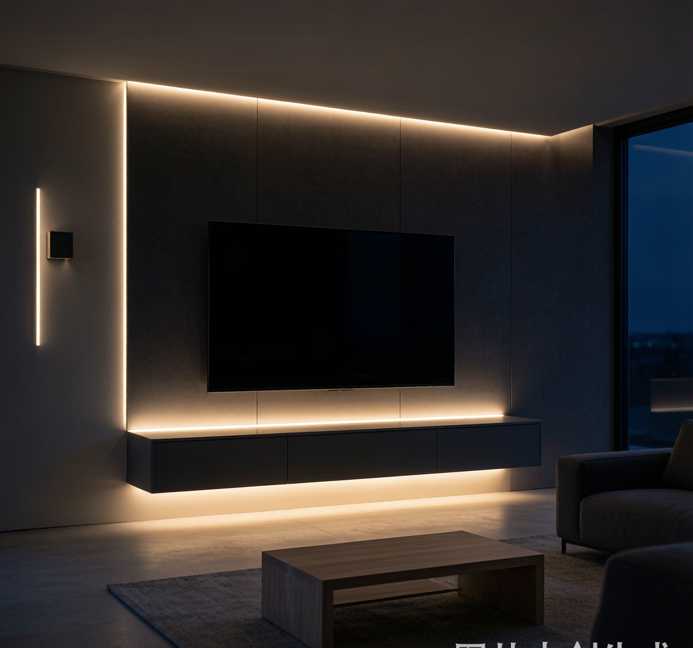
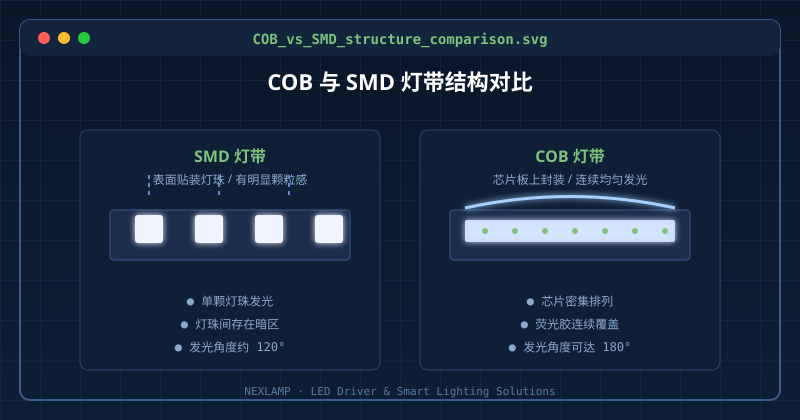
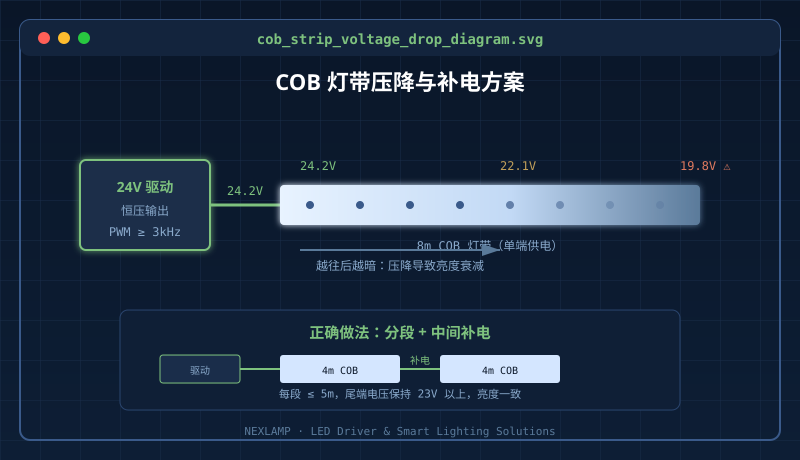

为什么越来越多人盯上COB灯带？
最近不管是家装设计师，还是做无主灯的朋友，都在聊COB灯带。原因很简单：它发光连续、没有SMD灯带那种一颗一颗的"灯珠感"，装在电视柜、窗帘盒、橱柜底下，效果确实高级。
但去年我接触过不下二十个COB灯带的售后案例，问题出奇地一致：装到一半亮度还行，越往后越暗；或者整条灯带前段亮、尾段闪；再或者调光的时候颜色不均匀。这些问题，多半不是灯带本身不行，而是驱动和布线没配对。
今天这篇文章，就把COB灯带在实际工程里最容易翻车的三个点摊开讲。
一、COB灯带和SMD灯带，到底差在哪？
| 对比项 | SMD灯带 | COB灯带 |
|---|---|---|
| 发光效果 | 有明显灯珠颗粒 | 连续均匀，无颗粒感 |
| 发光角度 | 约120° | 可达180° |
| 功率密度 | 相对较低 | 单位长度功率更高 |
| 散热要求 | 一般 | 更高，需要更好的导热 |
| 价格 | 便宜 | 贵30%-80% |
| 适合场景 | 基础照明、轮廓勾勒 | 氛围光、高端无主灯 |
COB灯带是把LED芯片直接封装在PCB板上，再用荧光胶覆盖。优点是光斑柔和，缺点是功率密度大、发热集中，对驱动的稳定性要求更高。

二、压降：COB灯带最大的隐形坑
低压灯带，不管是12V还是24V，都有一个逃不开的物理规律：电流沿着PCB铜箔走，越长电阻越大，电压就越低。这就是压降。
COB灯带因为芯片密度高，同样长度下电流比SMD灯带更大，压降问题也更明显。实际工程里经常遇到这样的情况：5米一条的COB灯带，接24V驱动，前端亮度正常，到第4米开始明显发暗，第5米几乎成另一条灯。
怎么解决？
- 能选24V就别选12V：同样功率下，24V的电流只有12V的一半，压降直接小一半。
- 单条控制在5米以内：超过5米，建议从中间或尾端补电。
- 补电比换驱动更重要：别指望一个更大功率的驱动能解决问题，驱动功率再大，电流走到尾端该降还是降。
- 核算铜箔宽度：低价灯带为了省成本会用窄铜箔，电阻大，压降更严重。
三、频闪：别让高级感毁于"隐形闪烁"
很多人装COB灯带是为了氛围，晚上开得暗一点，坐在沙发上看电影。但如果驱动用的是低频PWM调光，低亮度下频闪会非常严重，眼睛不一定看得见，但时间长了会发酸、发胀。
判断方法很简单：打开手机相机对准灯带，如果出现明显条纹，说明调光频率偏低。
驱动选型要点
- PWM频率建议≥3kHz：频率越高，低亮度下越稳定，手机拍照也不容易出现条纹。
- 优先选恒压+调光一体化驱动：COB灯带是恒压负载，别错配成恒流驱动。
- 确认调光协议匹配：0-10V、可控硅、DALI、Zigbee，协议混用大概率会闪。
- 调光深度要真实：有些驱动标1%-100%，实际到20%以下就断崖式闪烁，选购时要看最低稳定亮度参数。

四、一个真实的翻车案例
有个客户做餐饮空间，天花一圈用了8米COB灯带，只在一头接了一个24V 150W驱动。结果装完开灯，前3米亮得刺眼，后5米像没电一样。
我们现场测了一下：驱动输出端24.2V，灯带尾端只有19.8V。COB灯带在20V以下亮度会明显衰减。
解决方案：把8米分成两段，每段4米，中间补一路电。改造后整条灯带亮度一致，总成本只多了一根补电线和一个接线端子。
常见问题
Q: COB灯带一定比SMD好吗？
A: 不一定。预算有限、只做基础照明的场景，SMD性价比更高。COB更适合对光斑均匀度、高级感有要求的氛围光场景。
Q: 12V和24V的COB灯带能不能混用？
A: 不能。电压不同，驱动必须对应。混用轻则亮度不均，重则烧毁灯带。
Q: COB灯带可以用普通开关电源吗？
A: 如果只是常亮，普通恒压开关电源可以。但如果要调光，必须选支持对应调光协议的驱动，否则调光器会闪、会啸叫。
Q: 压降问题能不能通过换更大功率驱动解决？
A: 不能。压降是线路电阻造成的，驱动功率再大，电流走到尾端电压还是会掉。解决压降要靠缩短单条长度、补电、或者提高电压。
总结
- COB灯带适合氛围光，但不适合一味图长：单条过长必然压降发暗。
- 优先选24V，能明显减少压降；超过5米要补电。
- 驱动必须匹配：恒压、调光协议、PWM频率、最低稳定亮度，四个参数都要看。
- 低亮度频闪别忽视，手机摄像头一照就能初步判断。
如果你在COB灯带选型、驱动匹配或工程安装上遇到问题，欢迎联系耐利普科技工程团队：138-2549-6855，我们可以根据你的灯带长度、功率和调光需求，给出现场可行的接线与驱动方案。